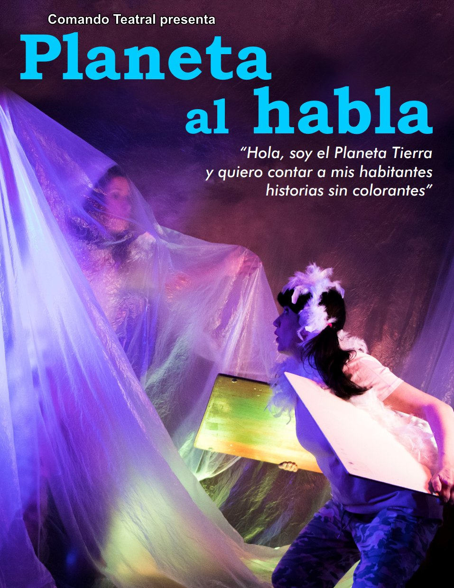
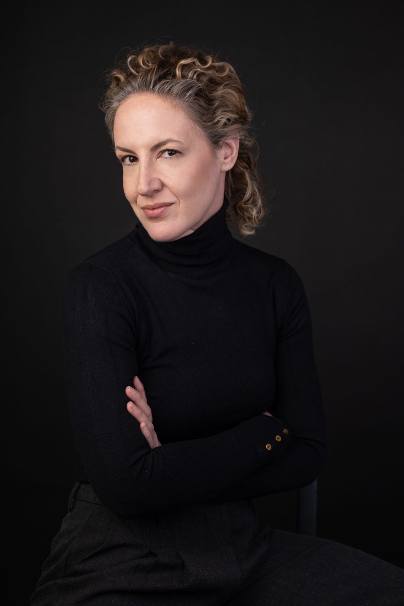
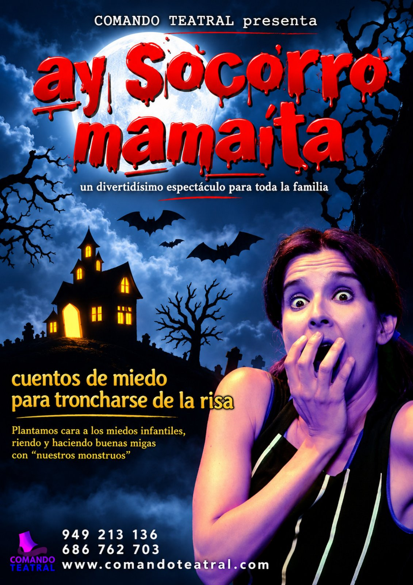
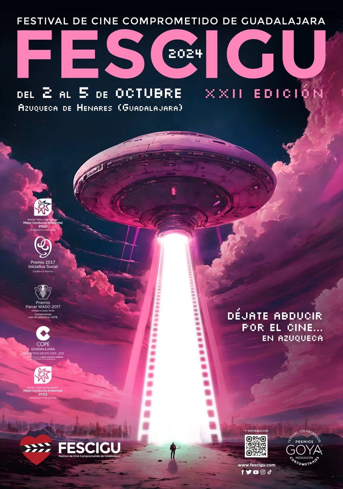

“Planeta al habla”
Espectáculo familiar de la compañía Comando Teatral.

Actriz con formación continua en teatro, interpretación ante la cámara y doblaje.
Me he formado en el Estudio Corazza, en Central de Cine, donde trabajo las técnicas de Tony Barr y Lesly Kahn con Javier Alcina, y en la Escuela de Teatro de Guadalajara con Ana Vélez, con montajes como “Soy Federico”, “Roxane Tenorio” y “Manzanas”.
Sobre el escenario, estoy de gira con los espectáculos familiares “Planeta al habla” y “Ay socorro, mamaíta” de la compañía Comando Teatral. He sido presentadora del Festival de Cine de Guadalajara FESCIGU y, en Soundub, me he especializado en doblaje, publicidad, audiolibros y locución.
Reel 2026

Espectáculo familiar de la compañía Comando Teatral.

Espectáculo familiar de la compañía Comando Teatral.

Presentadora del Festival de Cine de Guadalajara.
Retratos y fotografías de escena.
Hablemos de tu próximo proyecto.